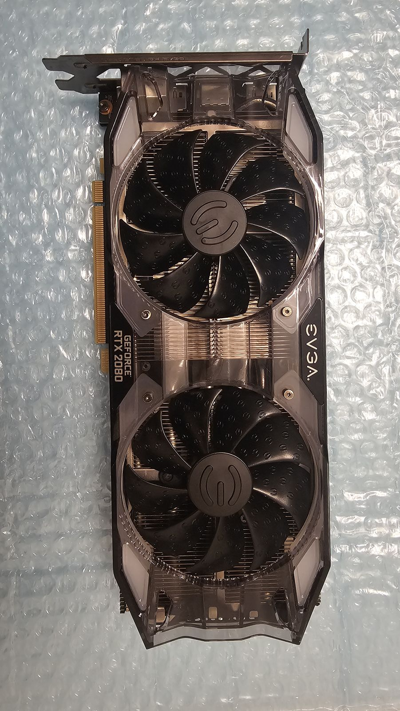
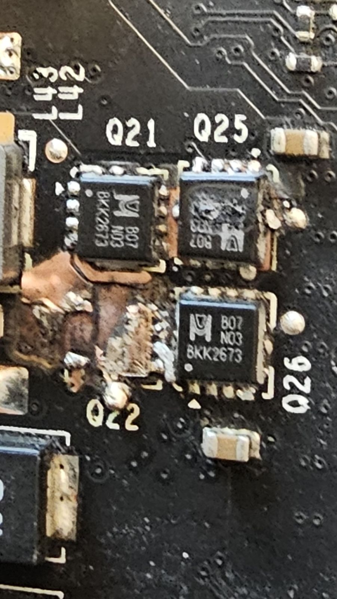
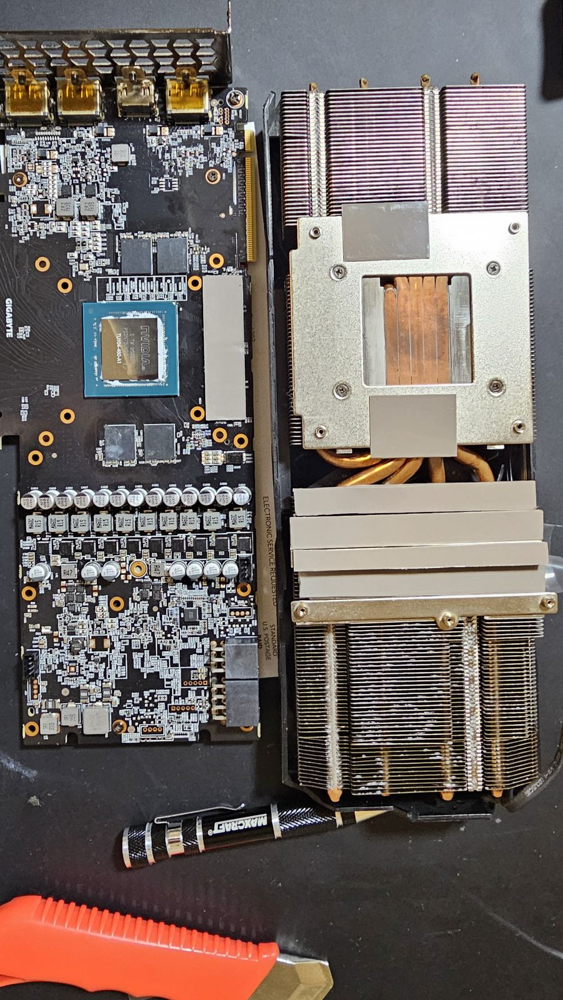
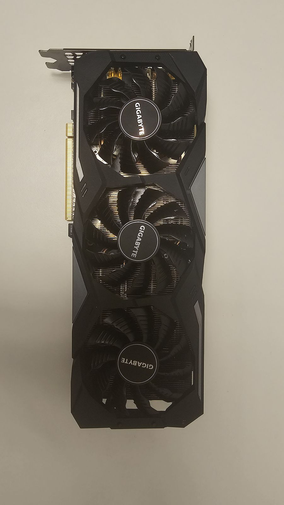
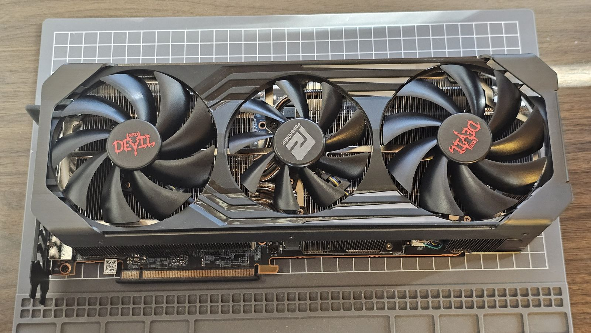
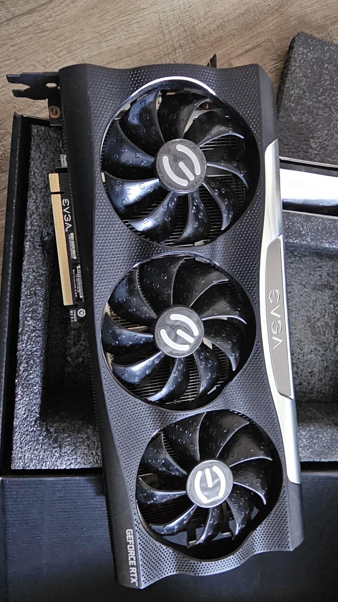
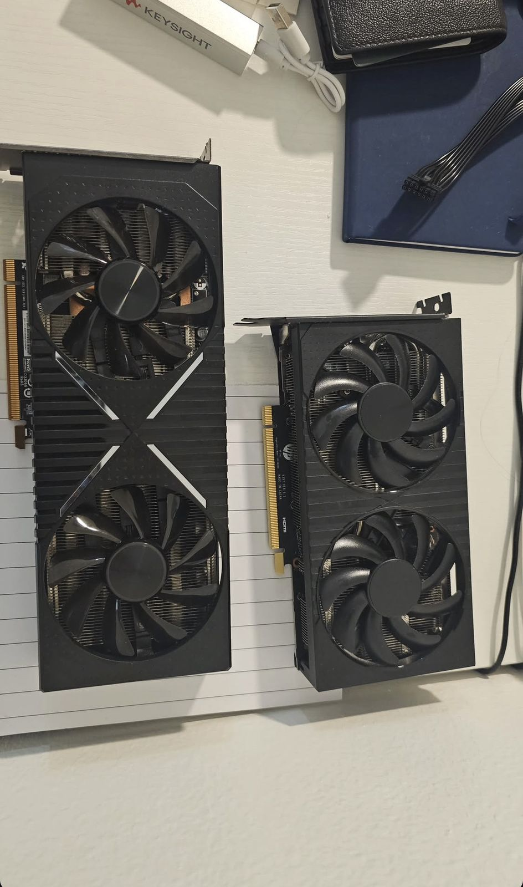
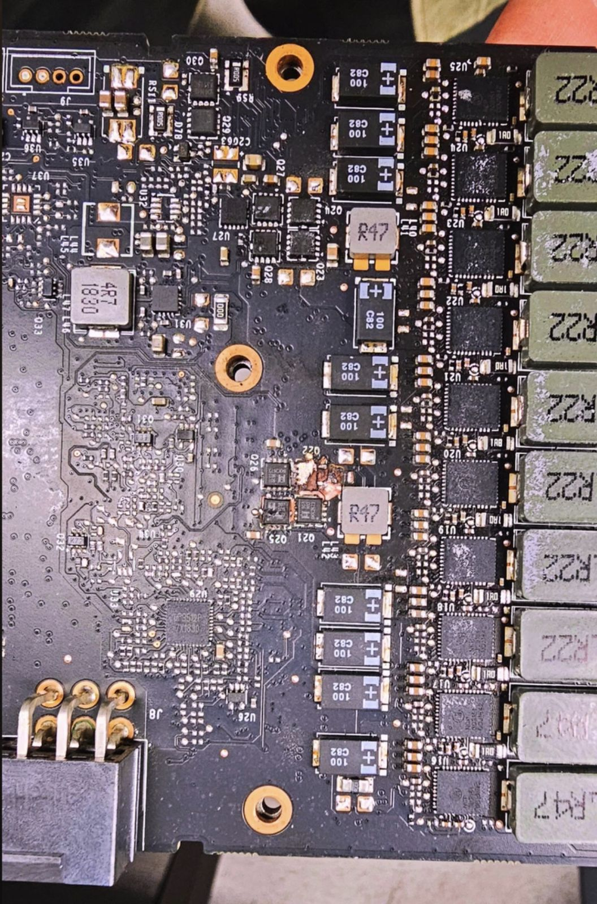
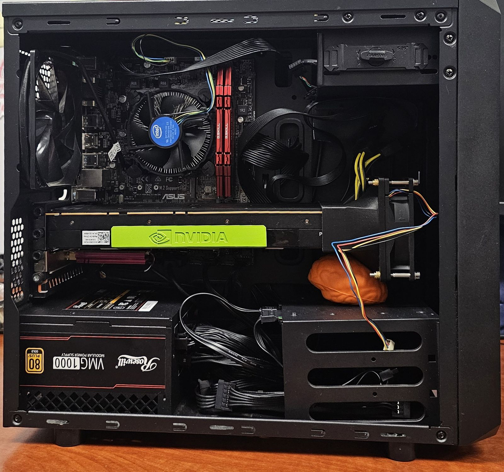

Photos from GPU repairs and teardowns that didn’t get a full write-up. The Intel Arc repairs that did are on the home page. Click a photo to enlarge it.
Dead after an overclock. I pushed the overclock too hard and a DrMOS gave out, shorting to the core rail. Under the microscope the GPU core itself heated up, so the short was in the GPU and the card couldn’t be saved.


TMON fault, fixed. One DrMOS power stage’s temperature-monitor (TMON) circuit was misbehaving. Each stage has its own TMON line, so I disconnected them one at a time by flipping the capacitor on each line until I found the stage causing the fault. Method from northwestrepair’s Gigabyte 2080 Super repair (how to find half dead DRMOS).


Repad, repaste, undervolt. New thermal pads and paste, then used for undervolting.




